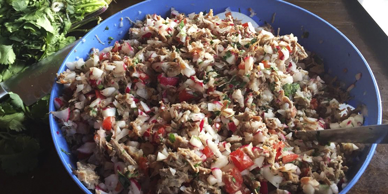
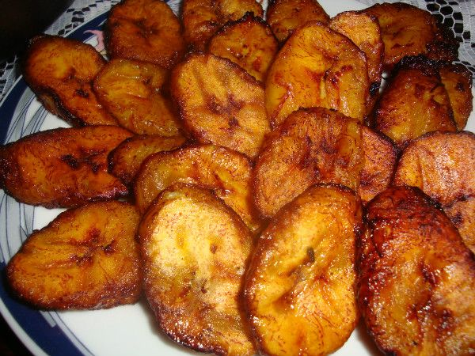

Preparación Batir la clara de los huevos a punto de turrón. Vertir la yema sin interrumpir el batido y agregar sal al gusto. En una tortilla, colocar el queso y doblar la tortilla. Precalentar el sartén con un poco de aceite. Envolver la tortilla en la mezcla de huevos. Freír el envuelto de tortilla en el sartén caliente ya con aceite.
 Primero, colocar la carne a cocinar en una olla de cocción rápida —olla de presión—. Sazonar con 3 cucharadas de consomé de res. Agregar el diente de ajo y 1 cebolla picada —estos ingredientes aportarán sabor a la carne durante la cocción—. Llenar la olla con agua hasta que esté a 3/4 de su capacidad. Cocinar por un aproximado de una hora. Dejar enfriar. Retirar la carne y picarla. En un recipiente aparte, picar los rábanos, la hierbabuena, los tomates y la otra cebolla. Agregar la carne y mezclar. Agregar un poco del jugo de los limones y sazonar con una pizca de sal y pimienta al gusto.
 Primero, pelar y rebanar los plátanos en pequeñas tiras. Agregar suficiente aceite al sartén y calentar. Freír las tiras de plátano hasta que estén doradas. Quitar el exceso de aceite en el plátano. Finalmente, servir con un poco de crema y azúcar al gusto.